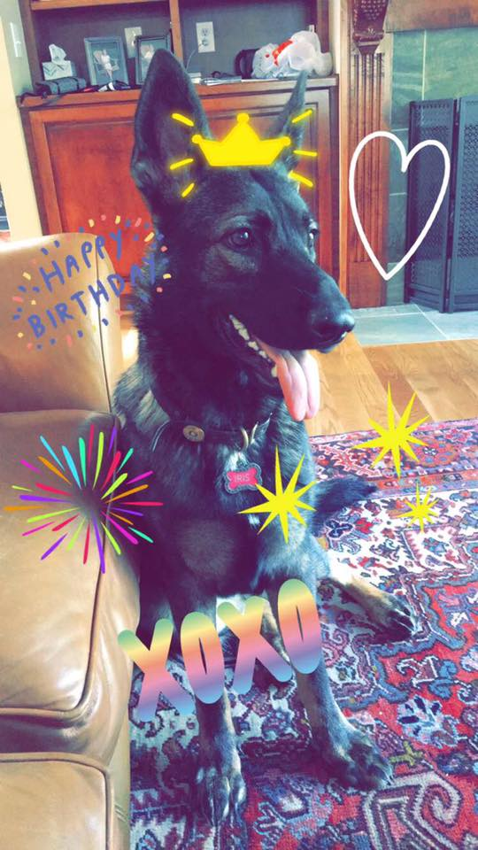

Iris Vuicich is my 1 year, 2 month old German Shepherd puppy. She enjoys her daily walks, and if she is not walked, she becomes extremely sassy and demanding and will bark at you until you walk her. She adores our older German Shephard, Hera, and all she wants is for them to be best friends, but Hera gets annoyed with her a lot since she is a puppy and Hera is much older and just wants to relax. She is very well trained, and listens to anything my dad tells her to do, however, with me, she thinks she is above me and so tends to not listen to me when I tell her to do something, even though she knows what I'm telling her to do. She is very smart, as are most German Shepherds, and so sometimes she thinks that she can outsmart my family and me.
She is still scared to swim in our pool, so instead she prefers to sunbathe at the top of our porch, or run around the pool when we are all in it. She loves it when everyone is playing in the pool because she is still a puppy, and so runs around trying to play with us, but still won't get in to play with us. We are hoping she starts swimming soon just like Hera does because swimming is actually good for dogs hips. She usually loves to mock everything that Hera does because she sees her as a mother figure, but for some reason she refuses to follow Hera into the pool.
She loves car rides, as does Hera, and so they both run downstairs whenever anyone is leaving in hopes that they will get to go. My mom will normally let them come during the day when all of my siblings are in school because they keep her company. I love driving both of the dogs in the car with me because they also keep me company. Although she is very sassy, she is extremely cute and has such a great personality, and we all love to play with her and are so happy that she is a member of our family.
Where We Got Iris: This is the website of the breeder that we got Iris from, which also shows all of the different German Shepherds that they have.
| Dog | Age | Time They Fall Asleep |
|---|---|---|
| Hera | 9 | 11 |
| Iris | 1 | 10 |